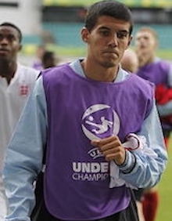
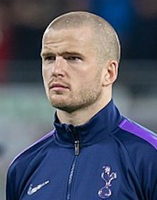

Gareth Announces Our Team of Mighty Warriors
Goal Keepers
Aaron Ramsdale

Top level bench warmer for Arsenal
Reputed to be the Premier league's top Candy Crush player!
Jordan Pickford
Plenty of practice behind a dreadful defence.
Can throw a tantrum that would embarass a 2 year old!
Nick Pope
Used to be good with Burnley
Easily distracted by memories of foriegn holidays during international games
Defenders
Trent Alexander-Arnold
Liverpool's match winning right-back
Tends to get lost and forget where defenders should play.
Conor Coady
Centre Half on loan to Everton from Wolves.
Apparently can whistle dixie in four languages. Wow!
Eric Dier
Tottenham's most interesting defender
Tendancy to confuse the assist and the backpass. Bugger.
Harry Maguire

Man U Captain has struggled for form.
As likely to end up in Qatar nick as in the last 16
Luke Shaw

Not the least talented Man U defender
Upset Ronaldo by eating chocolate cake so not all bad!
John Stones
Man City Regular
Likely to sulk for a week and wave his arms like an pigeon if the opposition score.
Kieran Trippier
Last played great at Burnley
On a good day can be alsmost as good as he used to be at the Turf
Kyle Walker
Just in case we didn't have enough right-backs
Danger he may burst the ball in his pointy chin!
Ben White
Often seen on the Arsenal bench
Known to run up large debts gambling on Candy Crush with Aaron Ramsdale!
Midfielders
Jude Bellingham

The Dortmund WunderKind
Despite his love of OXO he looks nothing like his Mother Linda
Conor Gallagher
Who? Have we heard of him?
More loans than Barclay's
Jordan Henderson
Popular Liverpool Captain
Master of the pass back - Would rather have the ball than score
Mason Mount

Voted most likely to get pissed before a big game
Unlikely to make a whole 90mins without a Red Bull
Kalvin Phillips
At Man City for now
Not always the most popular but his tap dance to Robbie Williams Bojangles is a wonder
Declan Rice

Interesting choice even his mum was surprised
Wonder if Gareth saw his amazing Mural on the pub?
Forwards
Phil Foden
The City player we all grudgingly like
This lad can make things happen but hide your wallet
Jack Grealish
The football equivalent of a bad takeaway
You were expecting so much but it just wasn't worth the money
Harry Kane
Englands great hope Harry
Don't make him captain. He needs one thing to concentrate on only
James Maddison
Training hard with Tom Daily
Goes down faster than a beer on a stag night (PG-Version)
Marcus Rashford
Given a few weeks off from the Food Bank
Working Class Hero almost as socilaist as Gary Neville.
Bukayo Saka

In a short career played from defence to forward
One to watch and Wayne Roonies Top Tip
Raheem Sterling
Great talent runs like an 8 year old
Been at the top for so long and still only 27. Golly
Callum Wilson
Shocked to get the call up
When Gareth rang he thought it was Trippier with a daft voice. Cor!